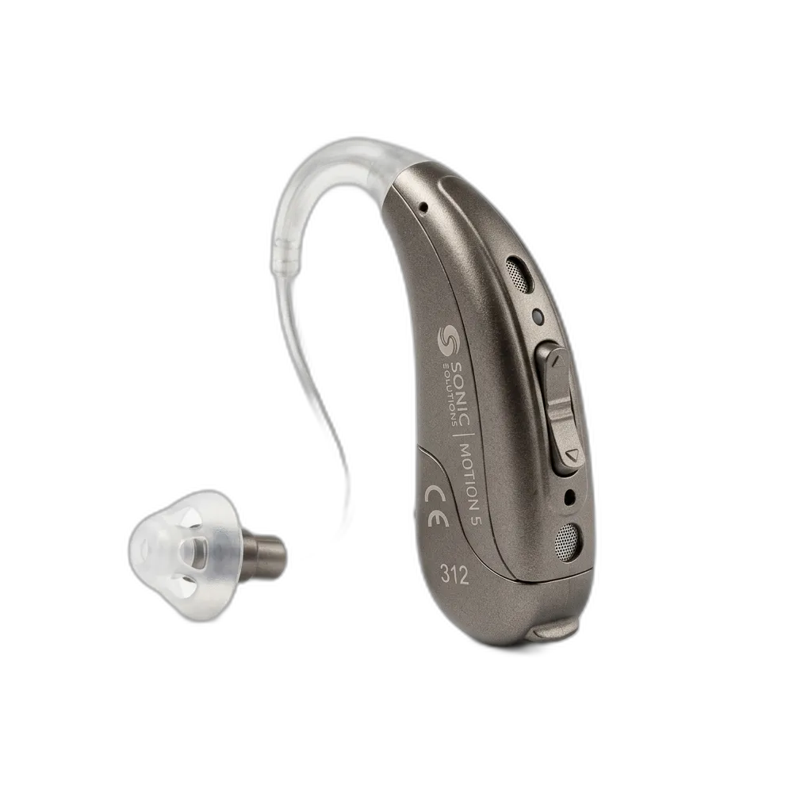
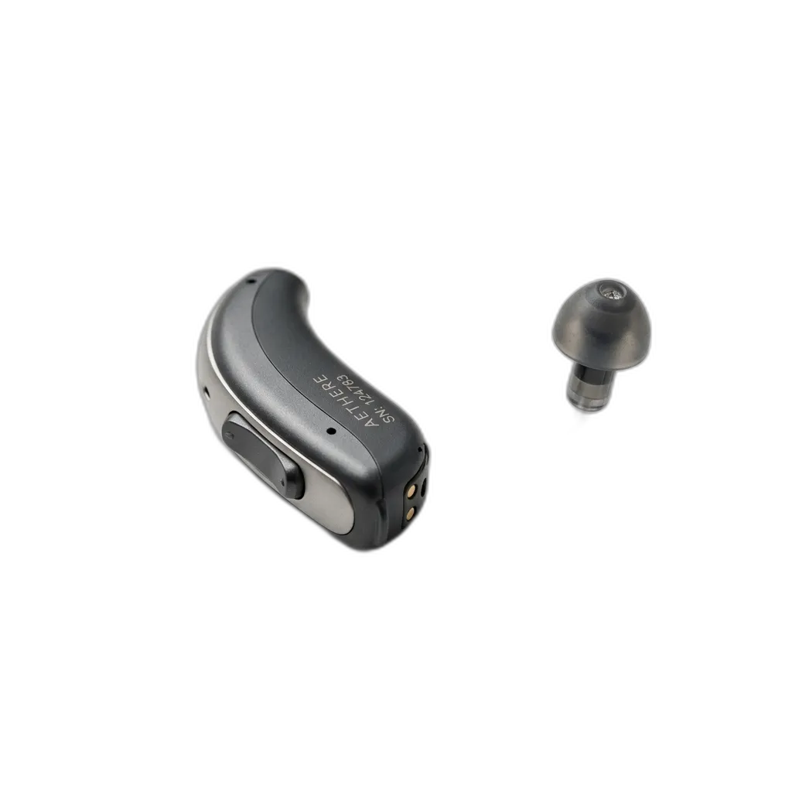
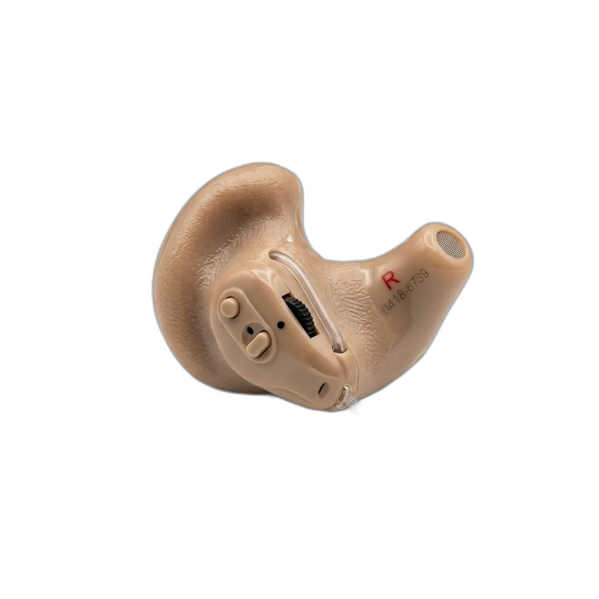
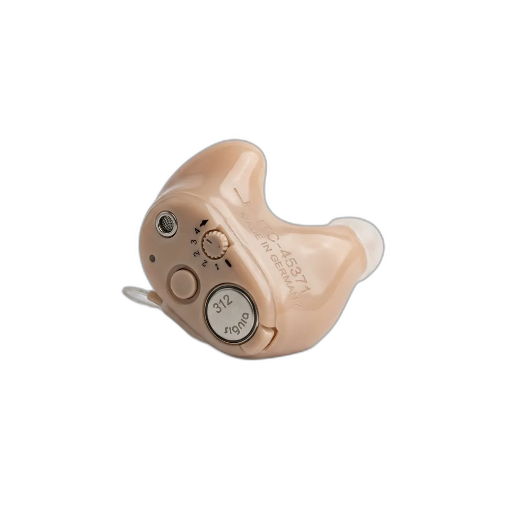
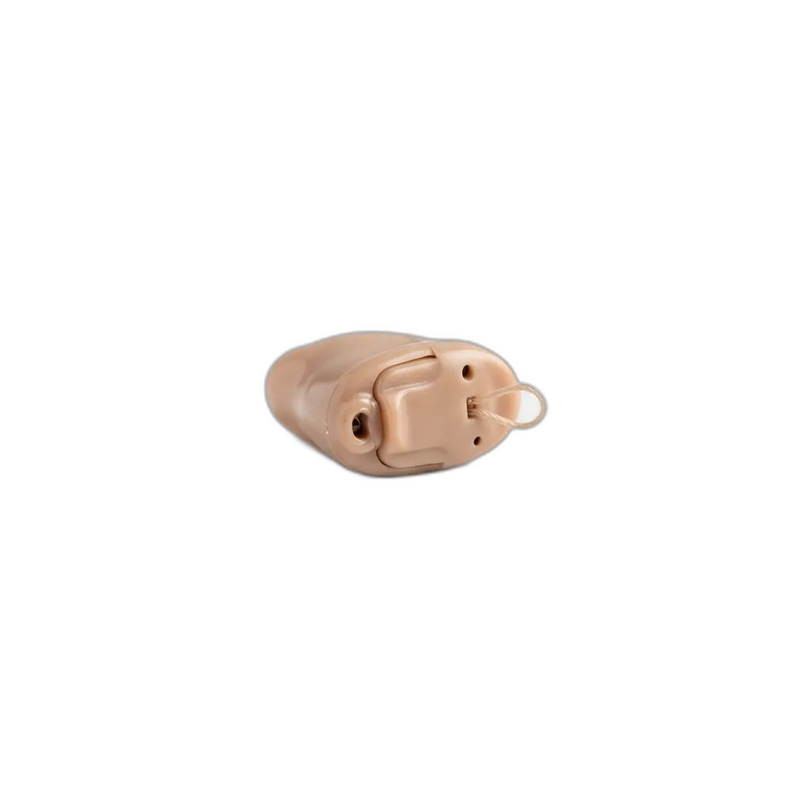
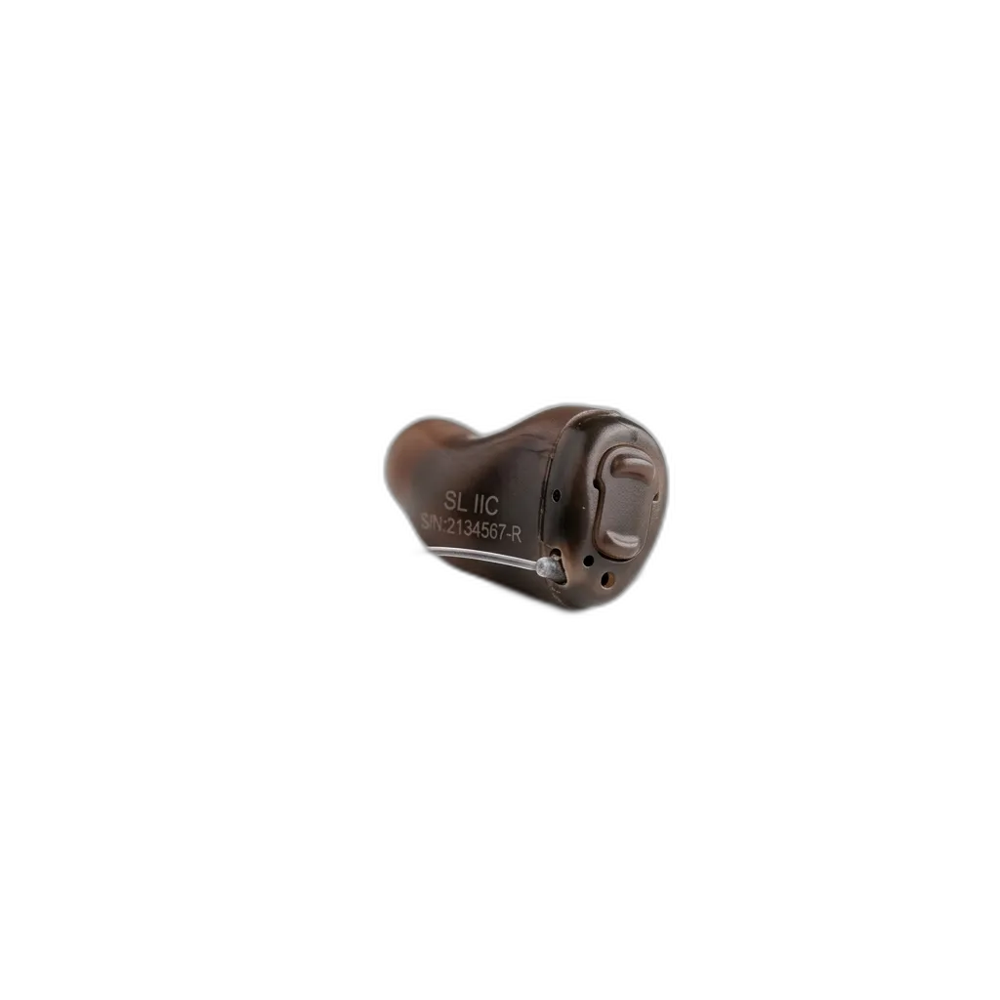
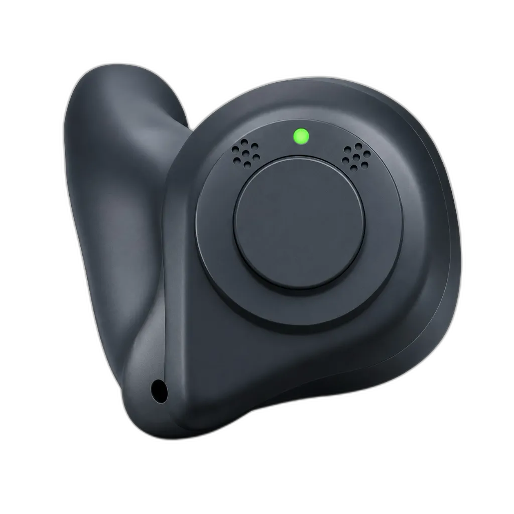

Hearing Aids
Personalized fitting, real-world trials, and lifetime support — across every style, technology, and budget.
Find a solution that perfectly fits your lifestyle. We offer a curated range of premium brands, allowing you to choose the absolute best for you. Try it instantly, step outside, and experience the difference—with no strings attached.
Find Your Perfect Fit
From virtually invisible to behind-the-ear — each style is crafted for a different lifestyle. Choose the one that fits yours.

BTE
Behind-The-Ear
Rests behind the ear with sound routed into the canal via a thin tube. The most versatile style — suitable for all degrees of hearing loss.
Best for: All degrees of loss
RIC
Receiver-In-Canal
Smaller than BTEs with the speaker sitting directly in the ear canal — delivering a more natural, open sound experience.
Best for: Mild to severe loss
ITE
In-The-Ear
Custom-molded to sit in the outer portion of the ear bowl. Larger surface area allows easy access to volume and program controls.
Best for: Mild to severe loss
ITC
In-The-Canal
Custom-molded to sit partially within the ear canal. Smaller and less noticeable than ITE models.
Best for: Mild to mod-severe loss
CIC
Deep Canal FitCompletely-In-Canal
A tiny shell that fits entirely inside the ear canal, hidden from most viewing angles. Minimal wind noise due to its recessed position.

IIC
Ultimate DiscretionInvisible-In-Canal
The smallest custom-made shell, fitting deep in the bony canal — virtually invisible to others and exceptionally discreet.

Modern
Earbud Style
Stylish earbud-style hearing aids with clear sound and smart connectivity. Rechargeable, comfortable, and designed for modern lifestyles.
Best for: Mild to severe lossHearing Aid Technology Levels
From robust basic amplification to state-of-the-art AI-driven environment learning — choose the tier that matches your listening needs.
Analog
Converts sound waves into amplified electrical signals. Simple, robust, and affordable — a practical choice for straightforward amplification needs.
Key Features
- Basic amplification
- No digital processing
- Low power consumption
Digital
Converts sound into digital code for sophisticated processing — superior clarity, programmable channels, directional microphones, and noise reduction.
Key Features
- Programmable channels
- Noise reduction
- Bluetooth connectivity
AI-Powered
The pinnacle of hearing technology. Machine learning continuously analyzes your environment — automatically dampening noise and focusing on speech.
Key Features
- Environment learning
- Auto-adaptive focus
- Real-time scene detection
Rechargeable vs. Disposable
Select the convenience of overnight charging or the flexibility of replacing batteries on the fly.
Rechargeable
Built-in advanced Li-ion batteries deliver all-day power from a single overnight charge. Simply place in the charging case at bedtime.
Advantages
- All-day power (up to 24h)
- No battery replacements
- Eco-friendly
- Quick 3-hour charge
Disposable Battery
Uses standard replaceable zinc-air batteries. Ideal for those who prefer the freedom to swap batteries anywhere — no charging infrastructure needed.
Advantages
- Available globally
- Swap instantly anywhere
- No charge-time dependency
- Familiar & simple
Special Hearing Systems
Clinically-engineered systems designed to solve specific challenges like single-sided deafness or tinnitus.
CROS Hearing Aids
Contralateral Routing of Signal
For single-sided deafness — picks up sound from the non-hearing side and routes it wirelessly to the better ear, giving 360° sound awareness.
BiCROS Hearing Aids
Bilateral CROS
Like CROS, but amplifies sound in the better ear too — for bilateral asymmetrical hearing loss where both ears have some degree of loss.
Bone Conduction Device
Bone Conduction Hearing
Bypasses the outer and middle ear entirely, transmitting sound vibrations through the skull directly to the cochlea.
Tinnitus Device
Tinnitus Management Device
Hearing aids with built-in masking technology that generates configurable soothing sounds to relieve ringing or buzzing.
Modern Advancements
Today's hearing aids are miniaturized computers — learning, adapting, and connecting to your world in real time.
Artificial Intelligence
Continuously learns your listening environments and auto-dampens noise — no manual adjustments needed.
Wireless Connectivity
Bluetooth 5 LE streams music, TV audio, and calls directly to your hearing aids with virtually zero latency.
All-Day Rechargeability
Lithium-ion cells deliver a full day of power from a single overnight charge. No tiny battery swaps.
Aggressive Noise Reduction
Speech Enhancer and StereoZoom suppress background noise — hearing clearly in a restaurant becomes effortless.
Deep-Dive Hearing Aid Guides
Explore authoritative, audiologist-authored guides to specific styles, flagship brands, and clinical trial processes in Lucknow.
Invisible Hearing Aids: The Complete Guide to IIC & CIC in 2026
Everything you need to know about deep canal placement, who qualifies as a candidate, instant-fit Signia Silk IX vs custom Phonak Virto Titanium, and pricing in Lucknow.
Read Complete Guide
Signia vs Phonak vs Widex: Brand Comparison Guide
Own-voice processing vs speech-in-noise vs pure sound acoustics. An honest audiological breakdown.
Best Hearing Aids in Lucknow 2026: Brands & Prices
Explore realistic price tiers from ₹8,000 to ₹2,50,000+, trial policies, and fitting protocols.
Quick Navigation
Who this is for
- Individuals diagnosed with any degree of hearing loss.
- Current users looking to upgrade to newer technology.
- Those seeking invisible or rechargeable solutions.
What to expect
- 1 Discussion of your lifestyle and hearing needs.
- 2 Selection of the most appropriate hearing device.
- 3 Instant trial and precise fitting in the clinic.
- 4 Follow-up fine-tuning and ongoing maintenance.
Ready to begin?
Our clinical specialists are ready to help you find the perfect hearing solution.
Book Consultation